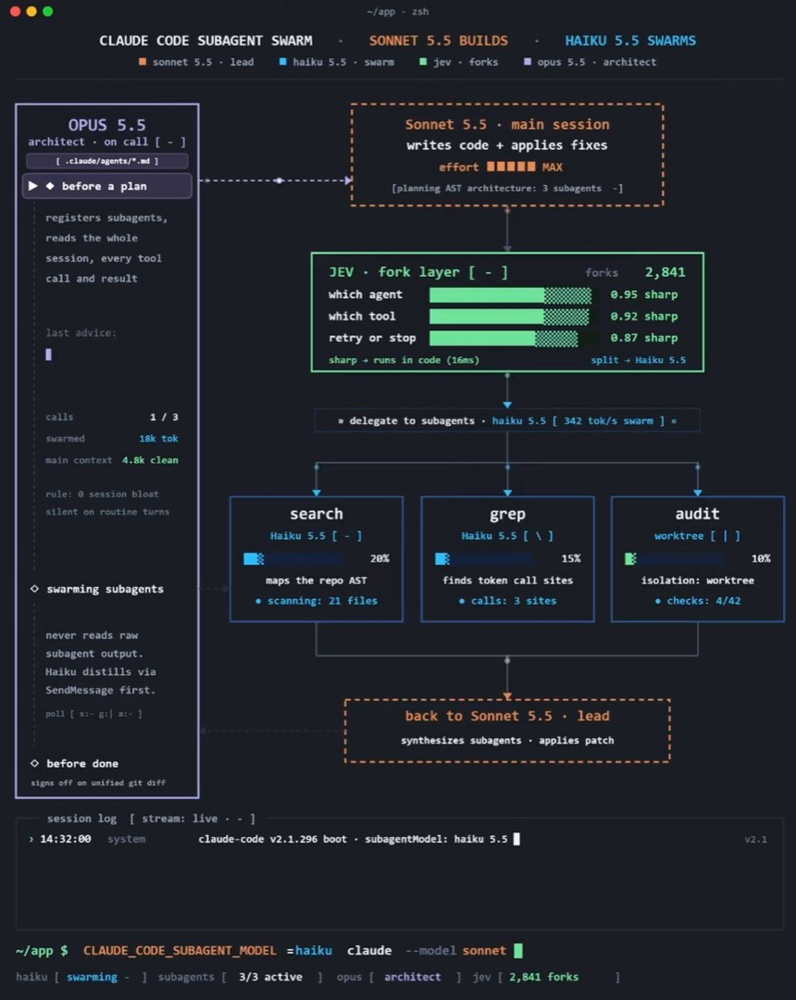
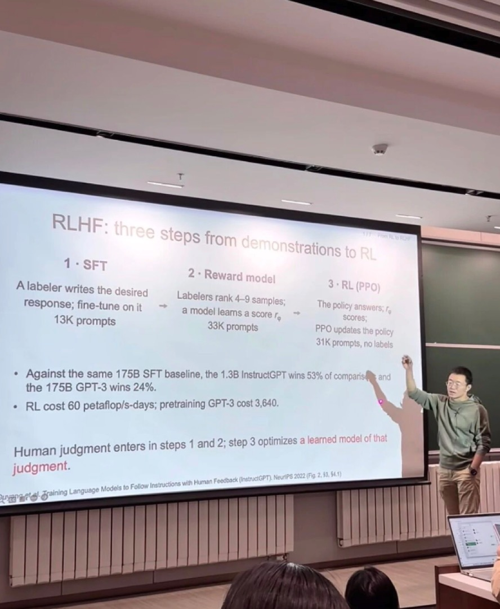
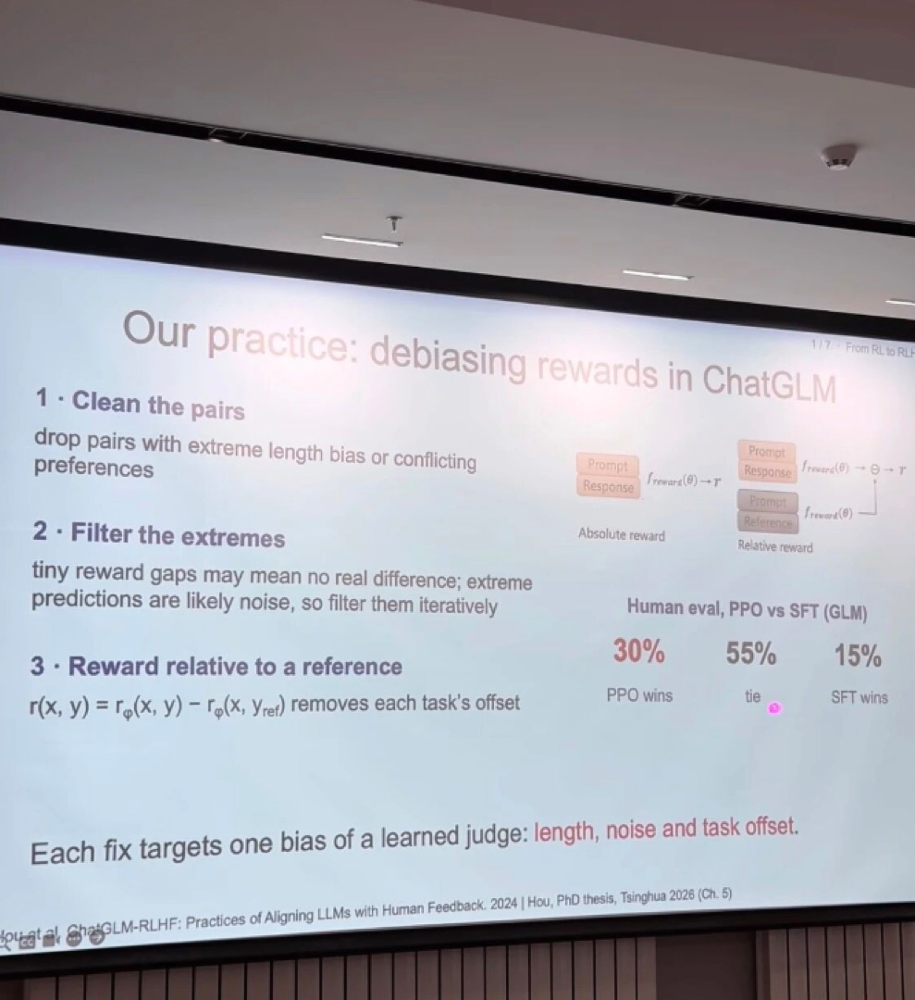
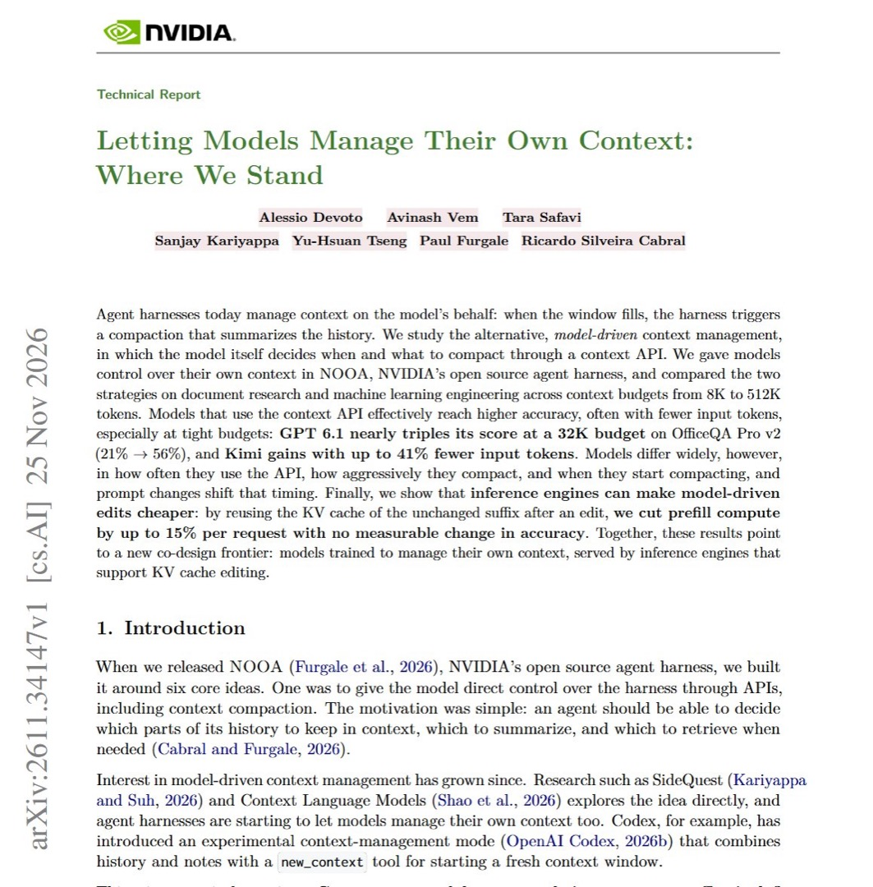
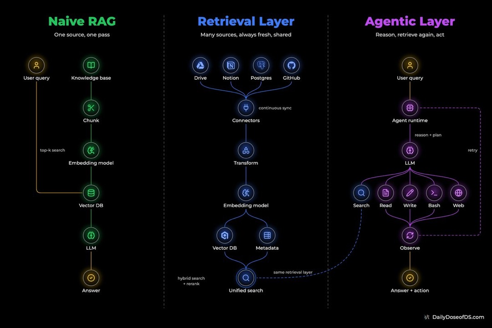
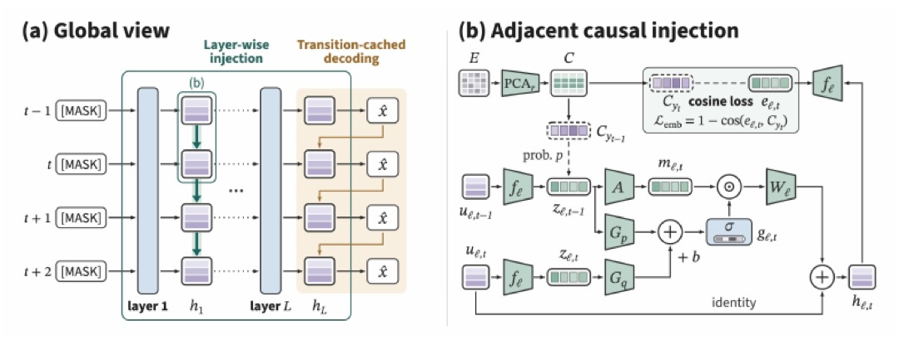
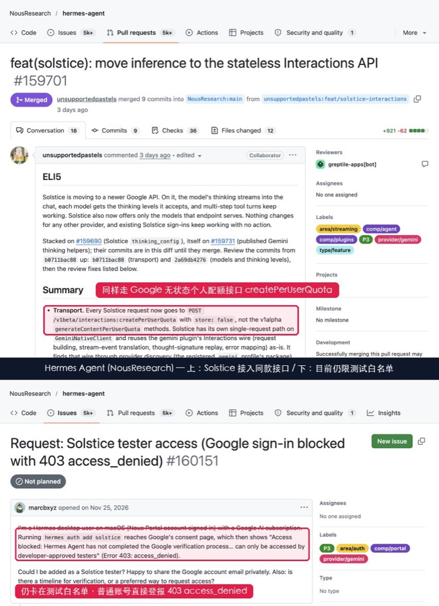
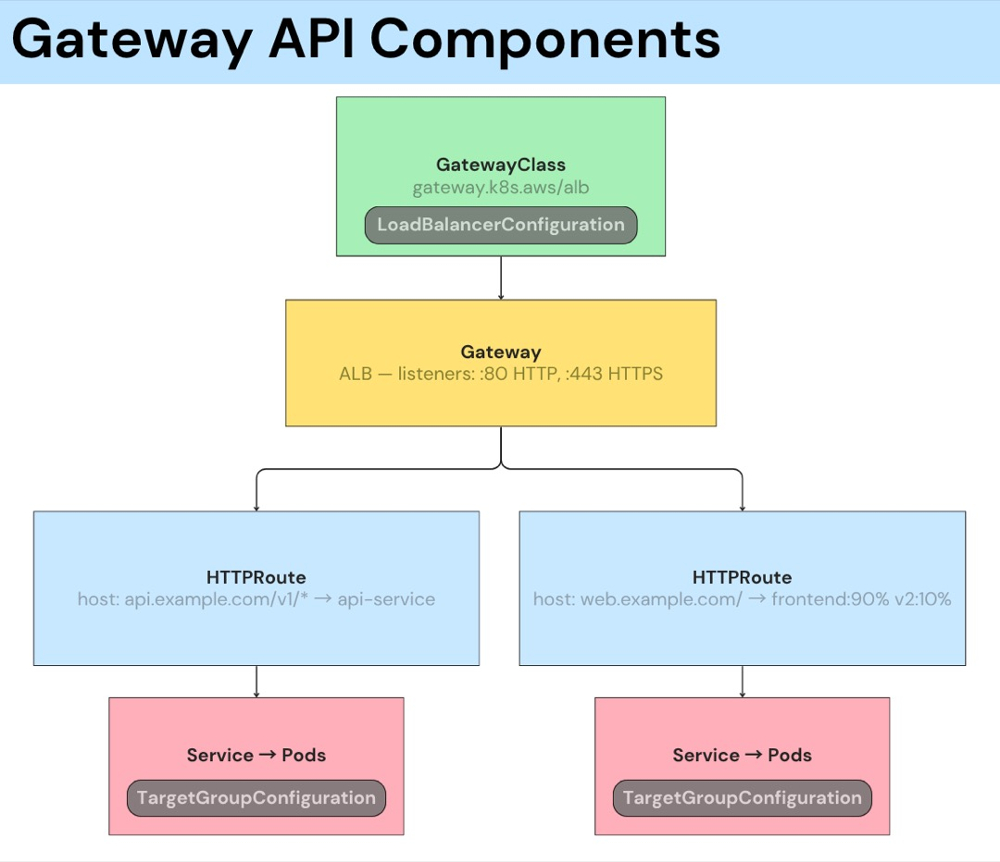

本期速览
01 Claude Code 推出多模型子代理分层编排
02 唐杰提出 Verifier 是中美 AI 胜负手
04 NVIDIA 让 Agent 自主管理上下文
05 Anthropic 与 Google 将检索改为独立服务
07 DSpine 用深度因果注入提升推理吞吐
01｜Claude Code 推出多模型子代理分层编排
来源（X） · @mirku21 · 2026-11-28 05:00
中文译文
天哪...Anthropic 官方给 Claude Code 的建议：
别再让 Opus 5.5 的上下文浪费在 Haiku 5.5 能集群处理的任务上，而让 Sonnet 5.5 去构建
让架构师随叫随到，配合自定义子代理
CLAUDE_CODE_SUBAGENT_MODEL=haiku claude --model sonnet
Sonnet 5.5 以高强度驱动主会话，编写 diff 并运行测试套件
Haiku 5.5 子代理以 340 tok/s 的速率并行集群扫描仓库，处理文件发现和规范文档查找
Opus 5.5 待命于 ~/.claude/agents/ 作为代码审查员，只在三个关键时刻介入：
→ 计划锁定之前：实现计划是否遗漏了认证不变量或模式契约？
→ 当测试两次失败时：我们是在修复根本原因还是陷入递归兔子洞？
→ 在宣布完成之前：完整 diff 是否引入了隐藏回归或破坏了预检规则？
Opus 5.5 审查。Sonnet 5.5 构建。Haiku 5.5 集群。
Claude Code 子代理架构通过隔离上下文运行相同的模式：高容量操作（读取 30 个文件、grep AST、运行测试套件）在独立的工作树中执行，因此 400k+ token 留在子代理中，而主会话保持干净的 14k 上下文
计划用高强度。委派用中强度。让 Opus 待命。
- 完整的子代理集群设置
> Opus 5.5 待命于 ~/.claude/agents/code-reviewer.md 捕捉深层架构陷阱
> Sonnet 5.5 主导驱动编辑、编写核心逻辑并执行测试框架
> Haiku 5.5 子代理以 340 tok/s 并行集群处理 AST 解析、grep 扫描和 API 文档
> 隔离：工作树保证测试运行和临时编辑永远不会污染你的 git 树
> 隔离的上下文窗口保护主会话免受 400k+ token 的冗长输出
将设置和以下提示粘贴到下方的 Claude Code 中：
“为分层子代理编排配置我的 Claude Code 工作区：
1. 审计 ~/.claude/settings.json 和项目配置，寻找适合主导、子代理和审查员的模型角色：
> 固定主会话模型：sonnet，effortLevel: high 用于主要执行
> 在 settings.json 中将 CLAUDE_CODE_SUBAGENT_MODEL 设为 haiku，并将 CLAUDE_CODE_SUBAGENT_MODEL_FORCE 设为 1
> 在 ~/.claude/agents/code-reviewer.md 中固定自定义 code-reviewer 模型：opus，effort: high
2. 在 ~/.claude/agents/ 中创建专用子代理文件：
> code-reviewer.md：model: opus，tools: Read, Grep, Glob，对计划和 diff 进行只读审查
> explorer.md：model: haiku，tools: Read, Grep, Glob，快速代码库搜索和 AST 发现
> researcher.md：model: haiku，tools: Read, WebFetch，外部文档和规范查找
3. 在 ~/.claude/CLAUDE.md 中配置自动委派检查点：
> 在最终确定多文件架构计划之前调用 @ code-reviewer
> 当同一测试或编译器错误两次失败时自动召唤 @ code-reviewer
> 在宣布任务完成或暂存 git 提交之前强制执行 @ code-reviewer diff 契约审计
4. 约束子代理范围：
> 为进行编辑或运行测试框架的子代理启用 isolation: worktree
> 仅返回结构化摘要，不淹没主对话上下文
先展示每个配置差异。在确认之前不要应用编辑”
↳ http://code.claude.com/docs/en/sub-agents
原文
HOLY F*CK... Official Anthropic tip for Claude Code:
Stop burning Opus 5.5 context on tasks Haiku 5.5 can swarm, while Sonnet 5.5 builds
put the architect on call with custom subagents
CLAUDE_CODE_SUBAGENT_MODEL=haiku claude --model sonnet
Sonnet 5.5 drives the primary session on high effort, writing diffs and running test suites
Haiku 5.5 subagents swarm the repo in parallel at 340 tok/s, handling file discovery and spec docs lookup
Opus 5.5 stays on call in ~/.claude/agents/ as the code reviewer, only stepping in at three critical moments:
→ before a plan locks: does the implementation plan miss auth invariants or schema contracts?
→ when a test breaks twice: are we fixing the root cause or falling into a recursive rabbit hole?
→ before calling done: did the full diff introduce hidden regressions or break pre-flight rules?
Opus 5.5 reviews. Sonnet 5.5 builds. Haiku 5.5 swarms
Claude Code subagent architecture runs the identical pattern through isolated contexts: high-volume operations (reading 30 files, grepping AST, running test suites) execute in separate worktrees, so 400k+ tokens stay in subagents while the primary session keeps a pristine 14k context
Plan on high. Delegate on medium. Keep Opus on call.
- the full subagent swarm setup
> Opus 5.5 on call in ~/.claude/agents/code-reviewer.md catches deep architectural traps
> Sonnet 5.5 lead drives edits, writes core logic, and executes test harnesses
> Haiku 5.5 subagents swarm AST parsing, grep scans, and API docs in parallel at 340 tok/s
> isolation: worktree guarantees test runs and scratch edits never pollute your git tree
> isolated context windows shield the primary session from 400k+ tokens of verbose output
paste the setup and this prompt into Claude Code below:
"Configure my Claude Code workspace for hierarchical subagent orchestration:
1. Audit ~/.claude/settings.json and project config for model roles fitting lead, subagents, and reviewer:
> Pin main session model: sonnet with effortLevel: high for primary execution
> Set CLAUDE_CODE_SUBAGENT_MODEL to haiku in settings.json with CLAUDE_CODE_SUBAGENT_MODEL_FORCE to 1
> Pin custom code-reviewer model: opus with effort: high in ~/.claude/agents/code-reviewer.md
2. Create specialized subagent files in ~/.claude/agents/:
> code-reviewer.md: model: opus, tools: Read, Grep, Glob, read-only review of plans and diffs
> explorer.md: model: haiku, tools: Read, Grep, Glob, fast codebase search and AST discovery
> researcher.md: model: haiku, tools: Read, WebFetch, external documentation and specification lookup
3. Configure automatic delegation checkpoints in ~/.claude/CLAUDE.md:
> Invoke @ code-reviewer before finalizing multi-file architecture plans
> Automatically summon @ code-reviewer when the same test or compiler error fails twice
> Enforce @ code-reviewer diff contract audit before declaring tasks complete or staging git commits
4. Constrain subagent scopes:
> Enable isolation: worktree for subagents making edits or running test harnesses
> Return structured summaries only without flooding the main conversation context
Show every configuration diff first. Do not apply edits until confirmed"
↳ http://code.claude.com/docs/en/sub-agents

引用内容
mirku @mirku21
中文译文
原文
02｜唐杰提出 Verifier 是中美 AI 胜负手
来源（X） · @leo114119 · 2026-11-27 10:16
课上唐杰几次提到 DeepSeek，坦言是自己心里的「意难平」，但他给出的核心判断其实跳出了纯堆参数的思路：中美 AI 下一阶段的胜负手，未必在模型规模有多大，而在「验证（Verifier）」能力的高低。
沿着 RLHF 到 RLVR、GRPO 再到 DAPO 这条线，他讲透了几个很实在的规律——模型推理能力能在强化学习里自己长出来（DeepSeek-R1-Zero 跑 10400 步 AIME 从 15.6% 飙到 77.9%），但二值奖励信号极稀疏，一次最多 1 比特，所以算法空间远没见底，同一个基座靠 DAPO 动态采样就能把 AIME 从 30 分推到 50 分。
更值得做产品和创业的人细品的，是后面两条推论：第一，门槛高不等于抗替代，数学和编程最先被 AI 吃透，恰恰是因为结果容易被机器低成本自动验证，以后判断一个岗位被替代有多快，只看产出能不能被核验；
第二，当 AlphaProof 的卡点都从「做证明」转向「把问题形式化」，落到真实业务里，行业评价标准加自动化 Verifier 的长期壁垒，大概率比 Agent 工作流本身更值钱。连原本靠直觉的审美和经验，现在都在被 Rubric RL 拆成一条条可核验条款，还能像企业 KPI 一样出现指标跑偏——工业革命让体力变便宜，
这波 AI 正在把「解题能力」彻底打成白菜价，真正决定胜负的，可能还是怎么把 AI 能力的价值验证出来；
唐杰最后说，他这一代与我们这一代投身 AI、参与中美 AI 竞争，是一条绕不开的路；课上他也勉励学生，多为中国 AI 出点力。


03｜Paseo 以 daemon 插件实现编排热更新
来源（X） · @kasong2048 · 2026-11-27 16:12
很多编排工具的定制停留在“Fork 我，去改”（比如 T3 Code），很不灵活，因为：
1. Fork 的应用重新打包，官方后续更新不好接
2. 移动端涉及到发版，更不方便
Paseo 在这块做的很好，他很多能力都暴露给插件，插件通过本地 daemon 分发，这意味着：
- 你在 mac 上实现一个 Paseo 插件，手机端只要能连接 mac，mac daemon 会把插件分发给手机端，插件在 mac、手机端能热更新
- 维护一个 Paseo 插件仓库，插件代码 push 后，所有机器只要 pull 就能同步更新
04｜NVIDIA 让 Agent 自主管理上下文
来源（X） · @Xudong07452910 · 2026-11-27 11:48
研究团队在 NOOA Harness 中开放了 Context API，让模型自主决定什么时候压缩历史记录、保留哪些信息，并且可以随时找回归档的内容。
在 OfficeQA Pro v2 的 32K Context 设置下，GPT-6.1 Sol 的正确率从 21% 提升到 56%。但 Claude Opus 5.5 仅在 4% 的任务中主动调用压缩 API，在较小 Context 预算下甚至出现性能退步。
这说明模型自主管理 Context 很有潜力，但不同模型目前掌握这种能力的程度差异还是很大的。
所以模型自己管 Context 很有潜力，只是现在各家模型会不会用，差别还挺大。Context Engineering 接下来值得往这个方向探索，让模型真正学会管理自己的工作记忆，知道什么时候该压缩、该留什么、什么时候该把旧信息找回来。不过这一步，可能还得靠专门的训练和评估。
📎 arXiv: https://arxiv.org/abs/2611.34147

05｜Anthropic 与 Google 将检索改为独立服务
来源（X） · @_avichawla · 2026-11-27 16:25
中文译文
Google 和 Anthropic 在检索方面达成了一点共识。
他们都将检索移出应用，并将其转变为代理调用的独立服务。
- Anthropic 的 MCP 将检索暴露为代理调用的工具。
- Google 也以类似方式交付，其 RAG Engine 位于 Gemini 代理平台之下，与 MCP 服务器并列。
他们这样做是因为旧的朴素 RAG 设置被构建为单个应用内的一次性管道，这在两个方面造成了问题：
- 第一个是过时的嵌入。它们反映的是索引时的源数据，因此当文档或行发生变化时，索引会与源数据漂移，并且在管道重新运行之前一直保持错误。
- 第二个是耦合的基础设施。检索逻辑位于一个应用内，因此另一个应用会重复连接器、分块和嵌入，而不是复用它们。
这两种失败模式都通过将摄入与查询分离并将摄入作为常驻层运行来解决。
摄入通过内容哈希同步持续运行，因此只有变更的数据会被重新嵌入，并且该层位于一个 API 之后，因此聊天机器人和代理命中同一个索引。
然后代理在循环中作为工具调用该层。它推理、运行搜索、读取结果并发出精炼查询，而不是在开始时检索一次。
下图描绘了所有三个阶段，涵盖朴素 RAG、常驻层以及消费它的代理。
这有帮助，但尚未解决所有问题，因为在所有三个阶段中，检索单元都是相同的，即一段文本块。
而本质上，一个块不知道语义边界、版本或源信息。分割器主要按 token 数量切割文档，因此单个块可能在表格中间或论证中间截断。
因此，它可能拉取表格的上半部分而没有行，或者拉取结论而没有支持它的推理。
转移到结构化单元，将问题与其经过验证的答案一起嵌入，可以解决这个问题。
也就是说，现在每个应用和代理都访问同一个索引，因此该索引必须随着增长保持快速和廉价。
我在下面的文章中展示了如何使其内存效率提高 32 倍，并附有可运行的代码。
在下面阅读。
原文
Google and Anthropic agree on one thing about retrieval.
They both moved it out of the app and turned it into a standalone service that agents invoke.
- Anthropic's MCP exposes retrieval as a tool that an agent invokes.
- Google ships it similarly, with its RAG Engine sitting under the Gemini agent platform next to MCP servers.
They did this because the old naive RAG setup was built as a one-time pipeline inside a single app, and it caused problems in two places:
- The first is stale embeddings. They reflect the source at indexing time, so the index drifts from the source when a doc or a row changes, and stays wrong until the pipeline is rerun.
- The second is coupled infrastructure. The retrieval logic sits inside one app, so another app duplicates the connectors, chunking, and embedding instead of reusing them.
Both failure modes are resolved by separating ingestion from query and running ingestion as a standing layer.
Ingestion runs continuously with content-hash sync, so only changed data is re-embedded, and the layer sits behind one API, so a chatbot and an agent hit the same index.
The agent then calls that layer as a tool inside a loop. It reasons, runs a search, reads the result, and issues a refined query, instead of retrieving once at the start.
The diagram below depicts all three stages, covering naive RAG, the standing layer, and the agent consuming it.
This helps, but it didn't solve all problems yet because across all three stages, the unit of retrieval is the same, i.e., a chunk of text.
And inherently, a chunk has no idea of a semantic boundary, version, or source info. The splitter cuts documents mostly on token count, so a single chunk can end mid-table or mid-argument.
Because of that, it can pull the top half of a table without the rows, or a conclusion without the reasoning that supports it.
Moving to a structured unit, embedding a question with its validated answer, addresses this.
That said, every app and agent now reaches the same index, so that index has to stay fast and cheap as it grows.
I showed how to make it 32x more memory-efficient in the article below, with code you can run.
Read it below.

引用内容
Avi Chawla @_avichawla
中文译文
原文
06｜Grok Bot 新增行程预订与广告连接器
来源（X） · @elonmusk · 2026-11-28 05:13
中文译文
升级
原文
Upgrades
引用内容
Ben Lang @benln
中文译文
Grok Bot 团队在过去几天交付了：
• 聊天中的航班、酒店和租车预订
• 每个计划的使用量增加 11%
• 例程的使用量最多增加 50%
• Google Ads 和 Google Analytics 连接器
• 更智能的 Slack Bots
• QuickBooks 连接器
原文
Grok Bot team shipped in the last few days:
• Flights, hotels, and rental cars bookings in chat
• 11% more usage out of each plan
• Up to 50% more usage for routines
• Google Ads and Google Analytics connectors
• Smarter Slack Bots
• QuickBooks connector
07｜DSpine 用深度因果注入提升推理吞吐
来源（X） · @jiqizhixin · 2026-11-28 05:00
中文译文
并行草稿 token 如何在草稿完成之前相互条件化？
上海交通大学、腾讯优图实验室和厦门大学的研究人员在 arXiv 预印本中介绍了 DSpine。
瓶颈：并行草稿 token 可能发生冲突，因为后面的位置对其前驱的信息了解太少。
机制：DSpine 在每个骨干层将每个前驱的预测特征注入下一个位置。因此，因果链通过网络深度发展，而位置是并行处理的。共享传输空间、逐层监督、融合内核和转换缓存为 SGLang 中的该机制提供支持。
回报：在温度为零的 Qwen3-8B 上，七个基准的平均接受长度从 DFlash 的 3.77 上升到 4.82。服务实验报告平均吞吐量比 DFlash 高 23.3%。接受长度和服务吞吐量衡量的是推测解码的不同部分。这些结果取决于论文测试中使用的目标模型、工作负载、温度和运行时配置。
并行草稿，通过深度条件化：用于推测解码的相邻因果注入
论文：https://arxiv.org/abs/2609.36173v1
我们的报道：https://www.jiqizhixin.com/articles/2026-11-09-6?source=rss
📬 #PapersAccepted by Jiqizhixin
原文
How can parallel draft tokens condition on one another before the draft is complete?
Shanghai Jiao Tong University, Tencent YouTu Lab and Xiamen University researchers introduce DSpine in an arXiv preprint.
The bottleneck: Parallel draft tokens can conflict when later positions have too little information about their predecessors.
The mechanism: DSpine injects each predecessor's predicted feature into the next position at every backbone layer. The causal chain therefore develops through network depth while positions are processed in parallel. A shared transfer space, layer-wise supervision, fused kernels and a transition cache support the mechanism in SGLang.
The payoff: On Qwen3-8B at temperature zero, mean acceptance length over seven benchmarks rises from DFlash's 3.77 to 4.82. The serving experiments report 23.3% higher average throughput than DFlash. Acceptance length and serving throughput measure different parts of speculative decoding. These results depend on the target models, workloads, temperatures and runtime configurations used in the paper's tests.
Draft in Parallel, Condition Through Depth: Adjacent Causal Injection for Speculative Decoding
Paper: https://arxiv.org/abs/2609.36173v1
Our Report: https://www.jiqizhixin.com/articles/2026-11-09-6?source=rss
📬 #PapersAccepted by Jiqizhixin

08｜智能维护市场 2032 年将达 204 亿美元
来源（X） · @iotguide · 2026-11-28 04:50
中文译文
随着 AI 采用增长，智能维护市场到 2032 年将达到 204 亿美元
https://iotbusinessnews.com/2026/11/19/smart-maintenance-market-to-reach-20-4-billion-by-2032-as-ai-adoption-grows/ #IoTGrowth #IoTForecasts #IoT2032
原文
Smart Maintenance Market to Reach $20.4 Billion by 2032 as AI Adoption Grows
https://iotbusinessnews.com/2026/11/19/smart-maintenance-market-to-reach-20-4-billion-by-2032-as-ai-adoption-grows/ #IoTGrowth #IoTForecasts #IoT2032
09｜Grok Bots 建议按专业角色分工编排
来源（X） · @elonmusk · 2026-11-28 04:32
中文译文
使用 Grok Bots 时，重要的是像人类公司一样创建具有专业化角色的 Bot。然后你可以让一个经理 bot 监督和协调他们的工作。
就像人类员工一样，如果你让单个 bot 超负荷处理大量工作，它就会开始掉一些球。
原文
When using Grok Bots, it is important to create Bots with specialized roles, just like a human company. You can then have a manager bot oversee and coordinate their work.
Just like a human employee, if you overload a single bot with a massive array of work, it will start dropping some of the balls.
10｜Pi 获 Google AI Ultra 官方 OAuth 接入
来源（X） · @YaoFur · 2026-11-28 03:58
中文译文
@magpie_router
原文
@magpie_router
引用内容
Unicorn @ohayou792
刚翻完 Pi 仓库今天新挂出来的 12614 号 Draft PR，代码还没合进 main 分支，但 Google AI Ultra 订阅登录已经实现了。
为什么 Pi 能直接接上 Google 官方 OAuth 订阅登录？
原因很简单，Pi单独向 Google 提交了官方 OAuth接入申请并且通过了。
Google 这个申请要求每个工具自己去建独立的桌面端 OAuth 应用，一家一家单独提交审批。
通过之后，登录时会把刷新令牌绑定在本机生成的密钥上，每次续期都要带本机签名校验，请求直接走 Google 新开的个人配额接口，目前只针对 AI Ultra 订阅开放，Pro 用户暂时未开放。
Pi 团队甚至专门在 README 里加了一段说明，写得很清楚：
这个登录客户端是 Google 单独批给 Pi 的，任何人 fork 仓库或者基于 pi-ai 自己做工具，都必须重新向 Google 申请，不准复用 Pi 的凭据。
想看代码细节的可以直接去 GitHub 搜 earendil-works/pi，点进 PR 12614 或者切到 google-ai-plan 分支，里面的 README 改动和 google-ai-plan.ts 写得清清楚楚。
顺着这套个人配额接口的特征，我把 GitHub 全网翻了一遍，看看还有谁拿到了审批。
除了 Pi，目前公开仓库里能查到走通这套官方通道的开源项目，只有 Nous Research 家的 Hermes Agent。
仓库里叫 Solstice 插件，前几天刚切到和 Pi 一模一样的无状态接口，不过看前两天的 issue 反馈，目前还卡在测试白名单阶段，普通账号直接登还是会被拦下来报 403。
OpenCode 的第三方分支 Shuvcode 虽然代码里也接上了 Solstice，实际是绕道借用了 Nous Portal 的登录通道，并没有拿到 Google 的单独批准。
至于其他开源Agent：OpenClaw、Cline、Roo Code、Zed、Goose 这些目前在公开仓库里全都没有这套官方接入的痕迹。
这么一来，以后第三方工具想接 Google 订阅，只能一家一家排队过审、单独领凭据，出了问题 Google 随时能按单个应用停权。
之前那些靠逆向抓包和共享凭据撑起来的野路子插件，后面基本走不通了。


11｜Eclipse Collections 补充 Java 集合能力
来源（X） · @TheDonRaab · 2026-11-28 03:48
中文译文
#Java 提供：
Compressed Oops、Escape Analysis、Compact Object Headers、Lambdas、Methods References、Default Methods、Stream
#EclipseCollections 提供：
丰富的 API、内存效率、原始类型集合、缺失类型、对称同情
为什么不两者兼得？🤔
https://github.com/eclipse-collections/eclipse-collections
原文
#Java gives:
Compressed Oops, Escape Analysis, Compact Object Headers, Lambdas, Methods References, Default Methods, Stream
#EclipseCollections gives:
Rich API, Memory-efficiency, Primitive Collections, Missing Types, Symmetric Sympathy
Why not both?🤔
https://github.com/eclipse-collections/eclipse-collections
12｜VoiceDrop 1.14 修复有声书下载完整性
来源（X） · @jianshuo · 2026-11-28 03:40
· fix(books): 下载的有声书只剩 4 秒——按服务端成品核对完整性，旧书自动修复
试用入口见置顶。#buildinpublic
13｜PDB Operator 按策略自动生成中断预算
来源（X） · @K8sArchitect · 2026-11-28 03:21
中文译文
PDB Operator 从可复用的可用性策略创建和更新 PodDisruptionBudgets，支持维护窗口，并在工作负载缩容时移除过时的 PDB
➜ https://ku.bz/KQZRxSLxB
原文
PDB Operator creates and updates PodDisruptionBudgets from reusable availability policies, supports maintenance windows, and removes stale PDBs when workloads scale down
➜ https://ku.bz/KQZRxSLxB
14｜EKS 迁移至 Gateway API 实现零停机
来源（X） · @K8sArchitect · 2026-11-28 03:06
中文译文
本教程展示如何将 EKS 集群从已退役的 ingress-nginx 控制器迁移到 Gateway API，涵盖 AWS Load Balancer Controller CRD 和零停机流量切换
➤ https://ku.bz/TdwBg1hLF
原文
This tutorial shows how to move an EKS cluster from the retired ingress-nginx controller to Gateway API, covering the AWS Load Balancer Controller CRDs and a zero-downtime traffic shift
➤ https://ku.bz/TdwBg1hLF
